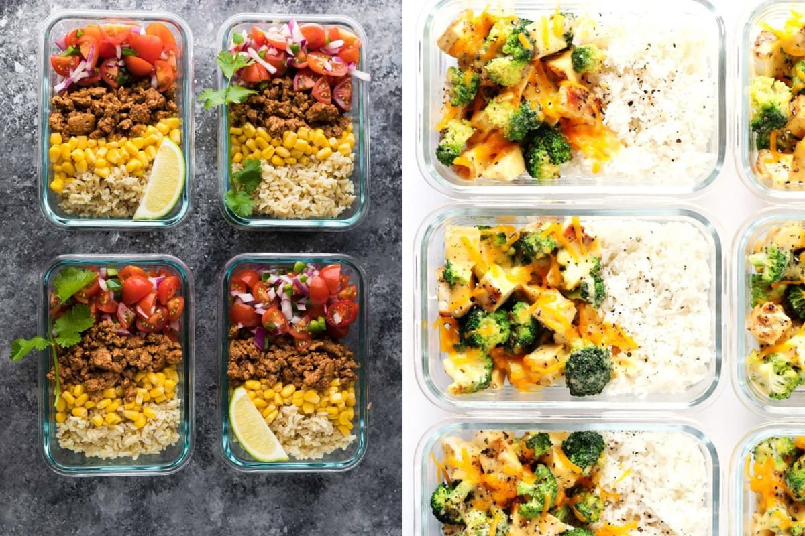
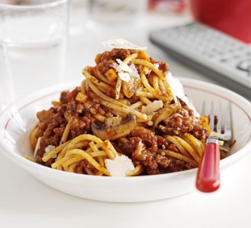

Batch Cooking
How to cook enough meals for the week in less than 2 hours
Big-batch bolognese:

Ingredients
- 4 tbsp olive oil
- 500g mushrooms
- 6 smoked bacon
- 1.5 kg lean minced beef (or use half beef, half pork mince)
rashers, chopped - 1.5 kg lean minced beef (or use half beef, half pork mince)
- 4 onions
- 6 tbsp tomato purée
- 3 carrots
- large glass red wine (optional)
- 4 celery
- 4 tbsp red wine vinegar
- 8 garlic cloves, crushed
- 1 tbsp sugar
- 2 tbsp dried mixed herbs
- 2 bay leaves
- parmesan
Method
- Heat the oil in a very large saucepan. Gently cook the bacon, onions, carrots and celery for 20 mins until golden. Add the garlic, herbs, bay and mushrooms, then cook for 2 mins more.
- Heat a large frying pan until really hot. Crumble in just enough mince to cover the pan, cook until brown, then tip in with the veg. Continue to fry the mince in batches until used up.
- Tip the tomatoes and purée in with the mince and veg.
- Rinse the cans out with the red wine, if you have some, or with a little water, then add to the pan with the vinegar and sugar. Season generously and bring to a simmer. Simmer slowly for 1 hr until thick and saucy and the mince is tender. Serve with pasta and parmesan.